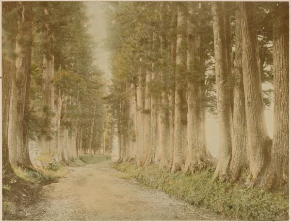

“The Nikko road”
Japan: Described and Illustrated by the Japanese (1897)
From this point on to Nikko the road is one grand avenue between magnificent trees, whose continuity of shade was only broken by intervening villages. I never saw a road like it anywhere. If one can imagine the fine old trees of Bushy Park planted on either side of a road from London to Canterbury, set closely together, sometimes not six feet apart, he may form a conception of this royal road. As we drew nearer Nikko, we found them planted on each side of the way in double rows, so that foot-passengers walked under shade on either side of the main road. In truth, it continually suggested the long nave and aisles of some grand Gothic cathedral, like that of Seville, for instance, and crowded with worshippers; the great distinction being the indefinite length; for overhead, the branches, arched together, make even at midday a “dim religious light.” For centuries the ruler of Japan was accustomed to visit Nikko either in person or by an envoy, to worship at the graves of his ancestors; and these trees were planted to shield the royal pilgrim from the sun or rain. The largest ones are nearest the holy place, and were the first planted. Near Imiachi, five miles out of Nikko, the traveller in the middle of the road looking, say forty feet ahead, cannot discern a single interstice between the line of tree trunks; it is one unbroken row of pillars, one continuous aisle. I have as yet seen nothing in Japan more grand than this avenue of trees which for more than thirty miles lines the way to the shrines of Nikko.
Rambles Through Japan Without a Guide (1892)
It is a tiresome thing—this sight-seeing. A few hours is enough. Yesterday, leaving behind the great temples and shrines, we followed the banks of the Daiya-gawa, passing through a suburb of Nikko quite distinct from the pilgrim’s part of the town. The streets are all at right angles, and through many of them runs a sparkling stream of pure water in pebble-lined aqueducts. Everywhere between this and the pilgrim town are evidences that at one time Nikko was of far greater importance and magnificence than to-day. Street after street along the hillside is lined with solid walls of massive masonry, sometimes six to eight feet high, and from three to five feet thick at the top. Flights of stone steps lead upward into spaces of desolation choked with brambles, covered with thickets. Here and there one finds a paved court thus enclosed; but empty, desolate; and each of these, Waku tells me, was the site of some temple or monastery of ancient days which has disappeared, leaving only the stone foundations.
Rambles Through Japan Without a Guide (1892)
Two distinct impressions of Nikko were left on our mind, for that first afternoon was damp and sunless, and the great trees towered above us through the mist, and the gold and colours of the temple roofs and walls were subdued into a soft dreamy beauty which we shall never forget. The next morning was brilliant in the extreme, each colour was intensified by the sunlight, and each building looked like a lovely mosaic set in the dark background of solemn fir-trees.
Japan As We Saw It (Bickersteth) (1893)
◀ NaraOsaka ▶